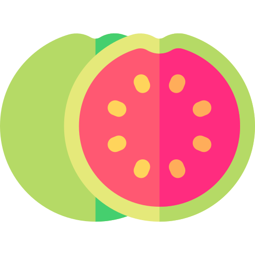
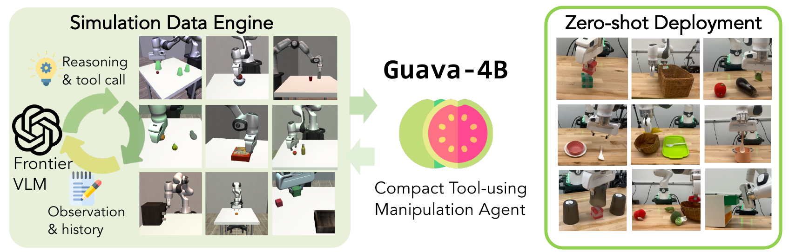
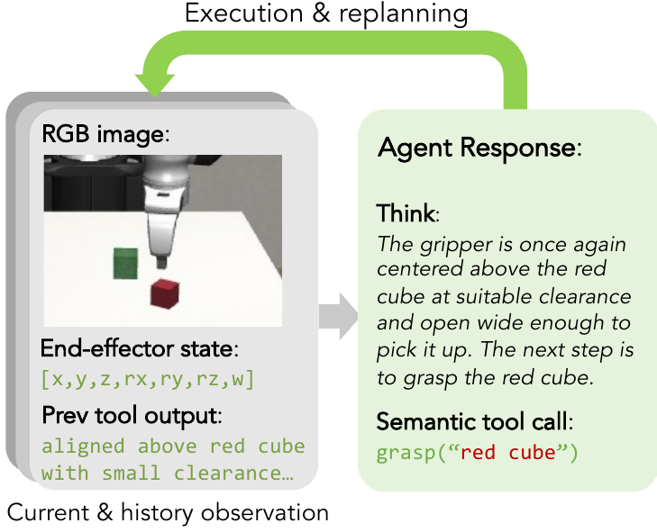
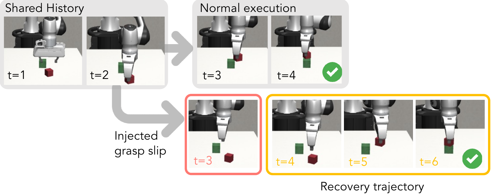
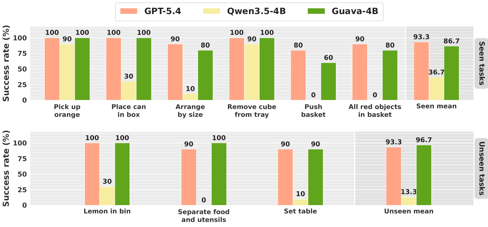
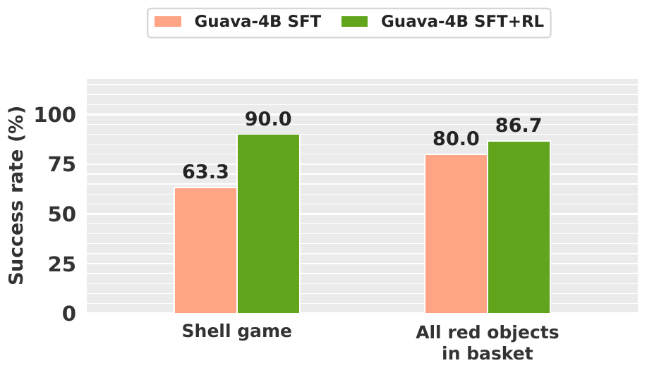

Frontier manipulation capabilities. Compact local deployment.

Guava: Distilling Frontier VLMs into a Compact Agent through a Robotic Manipulation Harness* Equal contribution
Overview
Frontier vision–language models can reason about scenes, invoke robot tools, and adapt to execution feedback, but repeated model calls incur high costs and latency. Guava transfers these capabilities to a compact agent through a shared manipulation harness and simulation-generated interaction data. Using GPT-5.4 as the teacher, we collect just over 2,000 trajectories and fine-tune Qwen3.5-4B to obtain Guava-4B. The compact agent approaches its frontier teacher across simulation, real-world, and external-benchmark evaluations, while substantially reducing inference latency and token usage.

A shared manipulation harness
The teacher and compact agent use the same observation, tool, and feedback interface. This lets teacher interaction histories serve directly as supervision for the student's subsequent decisions. We study three interface choices across GPT-5.4 and Qwen3.5-4B:
-
Iterative perception–reasoning–action loops
The full harness uses single-action replanning: a ReAct-style loop selects one action, executes it, then observes and replans. The multi-action replanning variant in the table instead generates a program of tool calls with simple control flow, executes it, then observes and generates another program if needed.
-
Semantic action abstractions
Object-referenced tools such as grasp and align encapsulate manipulation skills. The low-level comparison replaces semantic robot-control tools with a command specifying end-effector pose and gripper width.
-
Multimodal observations
RGB images, numerical gripper state, and tool-response text expose execution outcomes. We compare this full feedback with image-only and image-plus-gripper-state observations.

| Harness configuration | GPT-5.4 | Qwen3.5-4B |
|---|---|---|
| Full (single-action replanning) | 88.6 | 22.9 |
| Image only | 56.2 | 3.8 |
| Image + gripper state | 77.1 | 10.5 |
| Low-level tools | 73.3 | 4.8 |
| Multi-action replanning | 82.9 | 13.3 |
The full harness performs best for both models. Frequent feedback is particularly helpful for the compact model, but its remaining performance gap motivates training beyond inference-time interface design.
Training Guava-4B
GPT-5.4 generates interaction trajectories in randomized MuJoCo scenes through the shared harness. We also branch from saved states by injecting execution deviations, such as missed grasps or dropped objects, and retain successful recoveries. Simulator outcome labels undergo automated consistency checks and human visual review; supported annotation errors are corrected and unresolved episodes are excluded.
We fine-tune Qwen3.5-4B on the simulation trajectories, supervising the teacher's interleaved reasoning and tool calls in the context of observations and execution feedback. The resulting Guava-4B uses the same harness at deployment, without additional real-world fine-tuning.

Data gallery
Results
Guava-4B approaches GPT-5.4 performance while substantially outperforming its base model: 87.1% success in simulation and 90.0% in the real world, compared with 90.4% and 93.3% for GPT-5.4.
Simulation: capability transfer and generalization
| Task group | GPT-5.4 | Qwen3.5-4B | Guava-4B | Guava-4B w/o perturbations |
|---|---|---|---|---|
| Seen (7 tasks) | 86.7 | 23.8 | 82.9 | 81.9 |
| Unseen (8 tasks) | 93.8 | 20.8 | 90.8 | 77.1 |
| Overall | 90.4 | 22.2 | 87.1 | 79.3 |
Unseen tasks test new objects, instructions, and long-horizon compositions. Including perturbation trajectories raises unseen-task success from 77.1% to 90.8%.
Zero-shot real-world transfer

The rollouts below illustrate manipulation across object configurations, instructions, and task compositions.
Failure recovery
Qualitative examples illustrate feedback-conditioned adaptation. When an object is displaced before grasp execution, Guava retries using the updated scene. In the controller example, the gripper contacts the box rim during can placement, causing an abort consistent with a Cartesian collision reflex. The agent repositions horizontally to clear the obstruction and resumes placement. Unlike the missed grasps and displaced objects represented in training, this interruption comes from the physical robot's safety controller stopping motion in response to contact. The simulation data did not include this controller-specific failure, so the example illustrates adaptation to unfamiliar execution feedback.
Generalization to LIBERO-PRO
Without benchmark-specific fine-tuning, Guava-4B retains much of its teacher's capability on LIBERO-PRO, an external benchmark testing changed object positions and task goals.
| Perturbation | GPT-5.4 | Qwen3.5-4B | π0.5 | CaP-Agent0 | Guava-4B |
|---|---|---|---|---|---|
| Initial position | 0.45 | 0.06 | 0.25 | 0.20 | 0.41 |
| Task instruction | 0.44 | 0.03 | 0.01 | 0.16 | 0.41 |
RL fine-tuning
Additional GRPO post-training improves success on shell game from 63.3% to 90.0% and on placing all red objects in a basket from 80.0% to 86.7%, over 30 trials per task. These results show further improvement on the two selected long-horizon tasks.

Efficient local inference
On a single RTX 5090, Guava-4B reduces mean model-call latency by 7.10× and generated tokens per episode by 66.7% relative to the GPT-5.4 API, while approaching the teacher's manipulation performance.
| Metric | GPT-5.4 API | Guava-4B (local) |
|---|---|---|
| Model-call latency (s) | 4.168 | 0.587 |
| Model-request time / episode (s) | 42.10 | 5.64 |
| Generated tokens / episode | 2,389 | 795 |
Local inference reduces waiting time and token usage while retaining near-teacher performance. Timings cover model requests, not end-to-end robot execution.
BibTeX
@misc{liu2026guava,
title={Guava: Distilling Frontier VLMs into a Compact Agent through a Robotic Manipulation Harness},
author={Haowen Liu and Xirui Li and Shaoxiong Yao and Peng Shi and Tianyi Zhou and Jia-Bin Huang and Furong Huang and Jiayuan Mao},
year={2026},
eprint={2606.18363},
archivePrefix={arXiv},
primaryClass={cs.RO},
url={https://arxiv.org/abs/2606.18363},
}